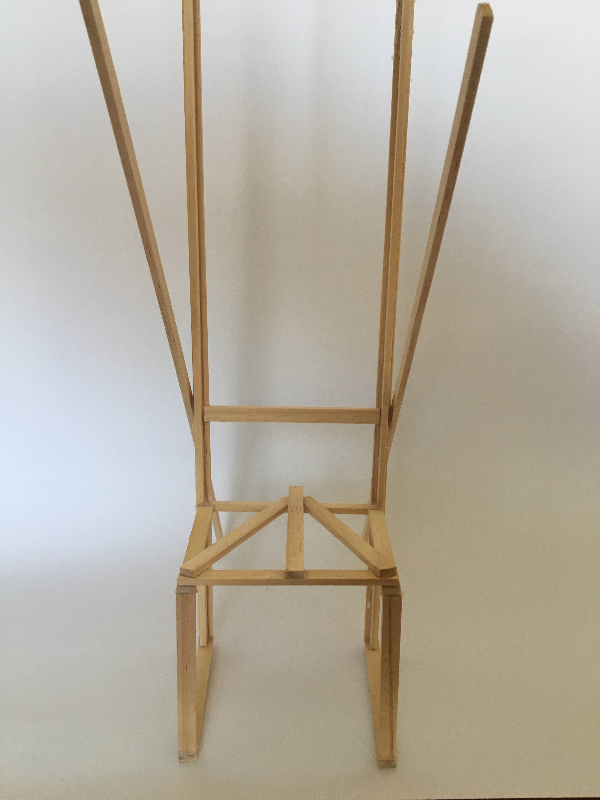

Taller observación, fundamento y forma

El proyecto final consistió en la construcción y diseño de una silla en base a las salidas de observación de los gestos en reposo. Trabaje con listones de 4x9cm, tornillos, taladro y sierra. Aprendí a serrar, abarrenar y atornillar los listones para crear la silla.